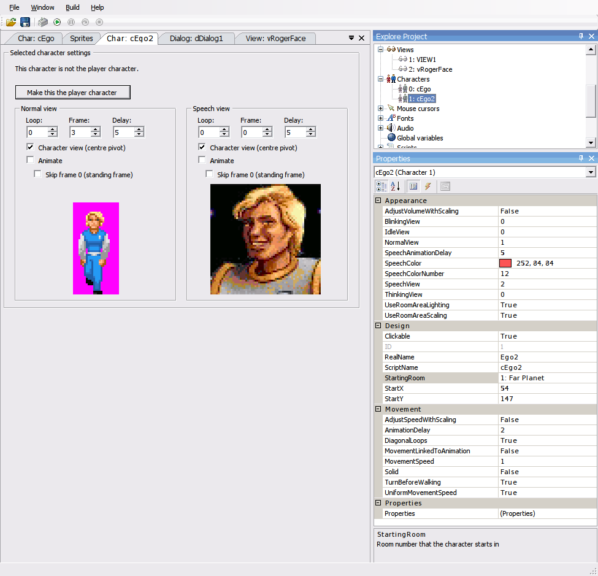

Character Editor
On the Explore Project panel, you can expand the Characters node to show the characters which are defined in your game. Right clicking on the "Characters" node itself allows you to create a new character, import a character previously exported from another project, or create a folder to help you organize things.
By double-clicking on a character within the tree, a new editor panel will open which allows you to inspect the NormalView and SpeechView for this character. This is also where you select whether this particular character will be used as the player character.
Note: Only one character can be the designated as the player character within this panel since this will also determine which room the game starts in. Changing the player character during the game is possible by using the script function Character.SetAsPlayer.

The properties panel shown will allow you to configure the initial properties of the character. The lighting bolt icon will switch to displaying the character's events, which may be mapped to functions within the game's Global Script.